A short film capturing one year in Taiwan through the perspectives of the people who shaped it.
Taiwan Through Our Eyes is a documentary project exploring the landscapes, communities, and quiet moments that define life in Taiwan.
As I moved through classrooms, neighborhoods, and shared spaces, I found community through familiar faces and the people who welcomed me in. This film highlights 13 individuals who shaped my life here — coworkers, community organizers, and mentors.
Their stories open a window into how Taiwan has shaped them, and are also reflections of the way I've come to see this place too.
The pages below share more of their stories, highlighting moments of kindness, resilience, and everyday life that together form our portrait of Taiwan.
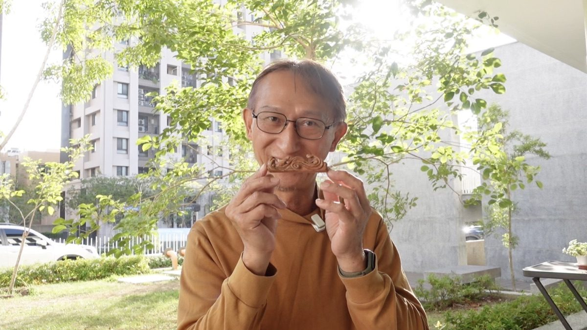
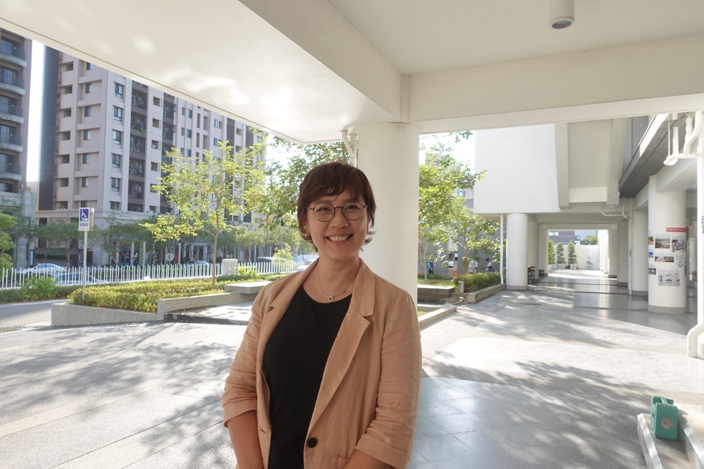
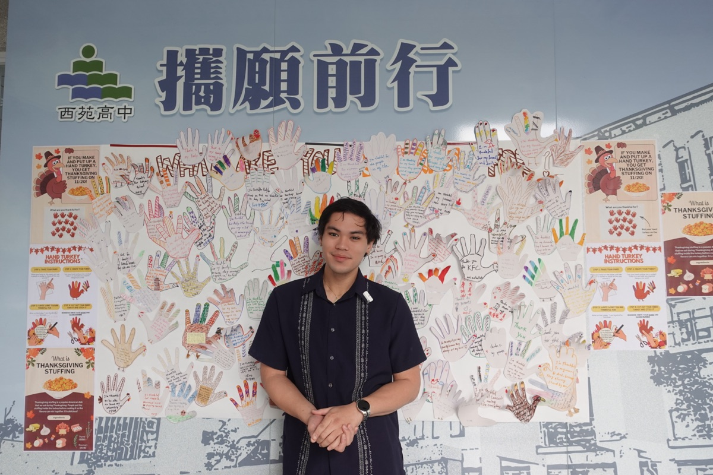
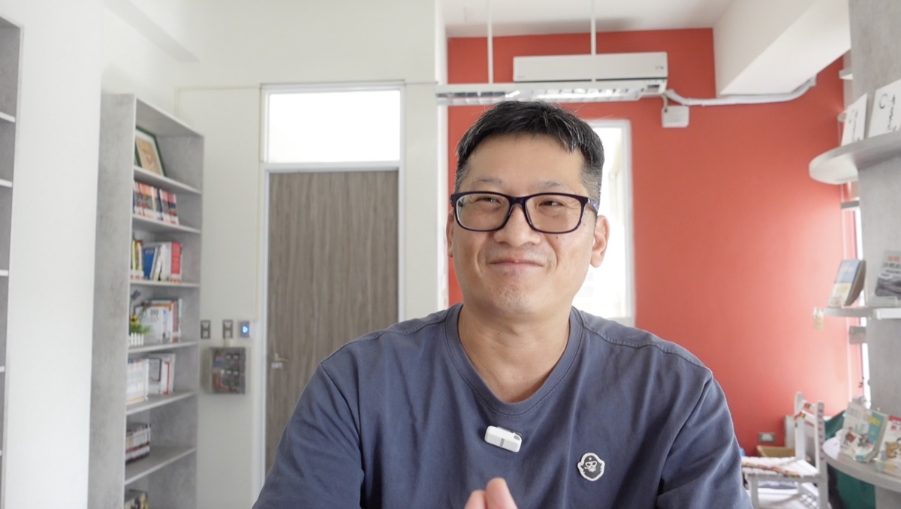
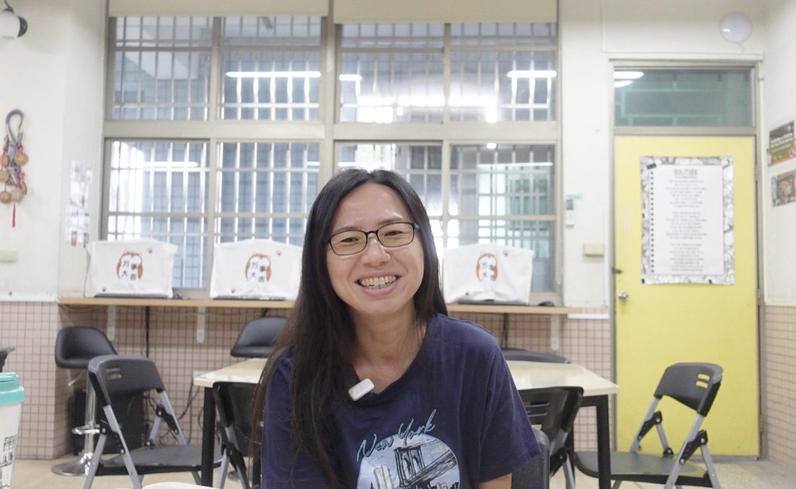
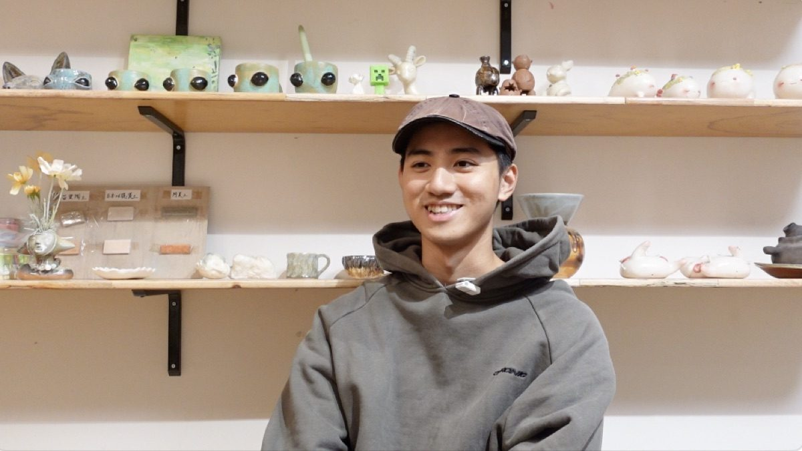
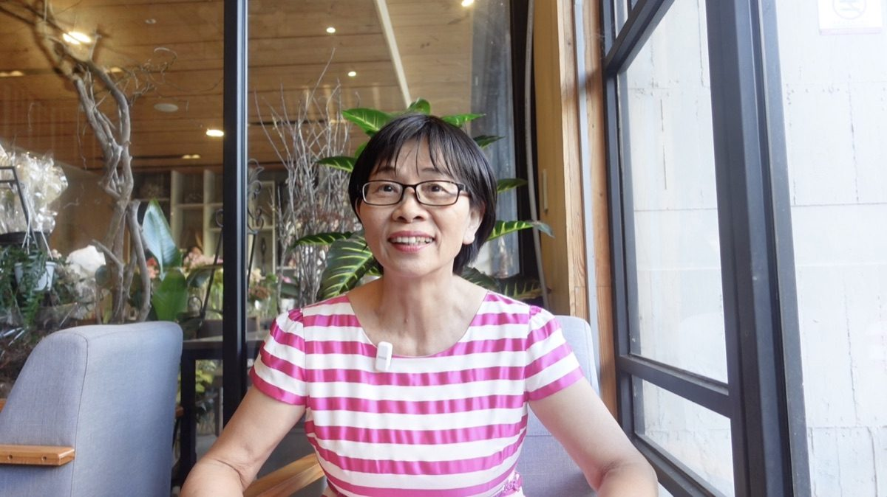
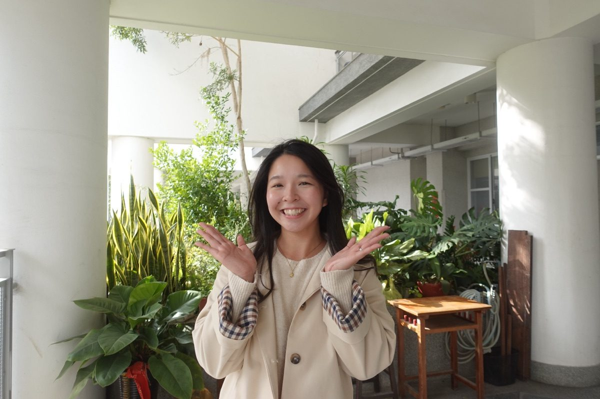
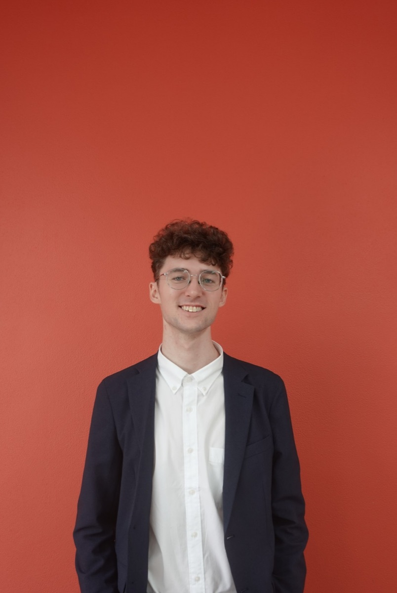
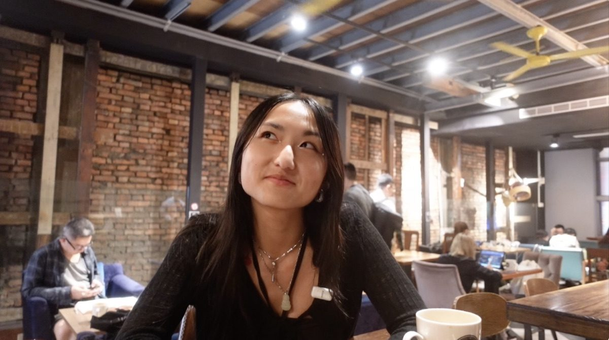
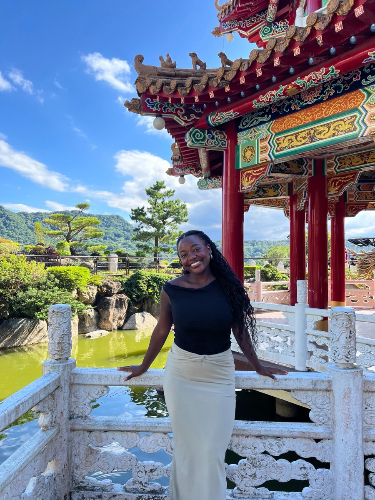
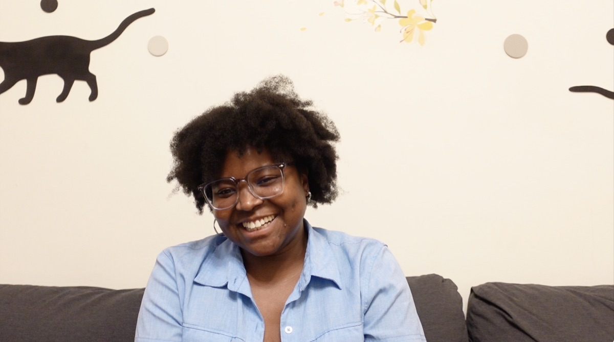
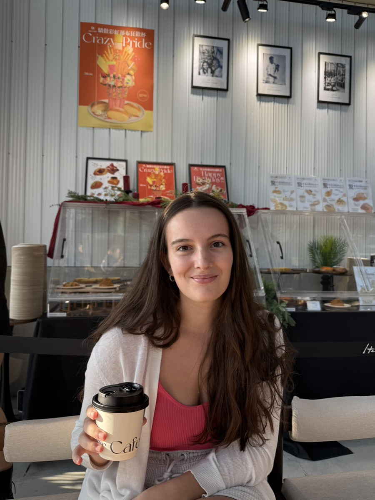
Amanda Cui is a first-year IEM-ETF in Taichung. Originally from New York City, she graduated from the University of Pennsylvania with a degree in finance and minor in fine arts. She has always loved storytelling, photography, and documenting moments that reflect community and place-making. Through videography, pottery, and other creative work, she explores cultural exchange, human connection, and the ways identity is shaped through life abroad.
Creating Taiwan Through Our Eyes was a way for me to slow down and truly listen. Rather than trying to explain Taiwan in my own words, I wanted to understand it through the people who have shaped my daily life here. Each conversation reminded me that belonging is built through small, repeated acts of care. This film became both a record of those voices and a reflection of my own growth — showing me that home is not a single place, but something created through relationships.
In addition, through my work as a Fulbright ETA, I was able to create Humans of Shi Yuan, a storytelling project that highlights the voices of students, teachers, and staff within the school community. The opportunity to be present in classrooms and everyday school life allowed me to listen more deeply and build meaningful relationships beyond teaching English.
I am incredibly grateful to everyone who took the time to speak with me, trusted me with their stories, and allowed me to be part of their lives. Thank you to Fulbright Taiwan, my schools, and the friends and mentors who supported this project from start to finish.
Thank you for watching and reading. ♡